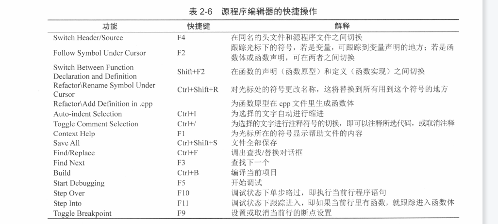
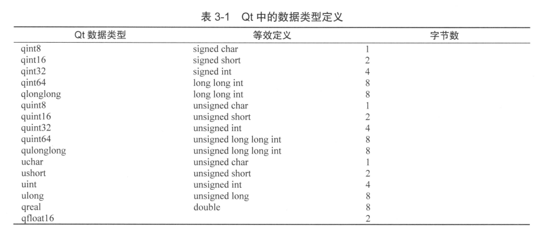
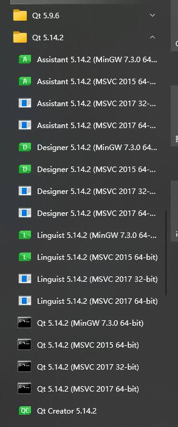

Q对象
QT 窗口类
QWidget：所有用户接口对象的基类
最上层的widget（top-level widget）是一个独立的窗口，有setWindowTitle()和setWindowIcon()来设置标题和图标
QListWidgetItem
QListWidgetItem表示QListWidget中的单个项目。 每个项目可以容纳几条信息，并将适当地显示它们。
文件操作类
QDir
可以访问目录和文件
QFileInfo：返回符号链接指向的文件或目录的绝对路径；如果对象不是符号链接，则返回空字符串。
- QFileInfoList
串口通讯相关
QSerialPort：提供访问串口的方法。可以枚举系统中的所有串口，帮助获取可用的串口，通过setPort()或setPortName()方法，分配所需的串口设备。
QSerialPortInfo：提供可用串口的信息
QIODevice：在QT中所有I/O设备的基本接口类
消息事件
QShowEvent：提供了显示小部件时发送的事件
显示事件有两种：
- 窗口系统（自发）引起的显示事件 QEvent::spontaneous()
- 内部显示事件
自发事件在窗口系统显示窗口之后立即发送；在图标化后重新显示顶级窗口时，也会发送它们。 内部显示事件在窗口小部件变得可见之前传递
线程相关
QMutexLocker：简化了互斥锁的锁定和解锁
QThread：提供了一种独立于平台的方式来管理线程。
数据类型
QString：提供unicode 字符集的字符串
- trimmed() //去掉首尾的空格
- simplefied() // 去掉首尾，及中间连续的空格用一个空格替换。
QByteArray：提供字节数组
QTextCursor：提供一个API访问和修改QTextDocuments
QTextDocument：保存格式化文本
QList： 数组列表
- inert()
- replace()
- removeAt()
- move()
- swap()
- append()
- prepend()
- removeFisrt()
- removeLast()
- 下标索引，或者 at() 函数
QLinkedList:
QVector: QVector的函数接口和QList几乎完全相同，QVector
QStack:
QQueue:
QStringList
关联容器：
QMap
QHash:
QSet:
QVariantHash:
QVariantList:
QVariantMap:Synonym for QMap<QString, QVariant>.
Q控件
QLabel:
继承关系：QObject->QWidget->QFrame->QLabel
一些用法：
qRegisterMetaType：在信号槽中自定义类型，用qRegisterMetaType对自定义类型进行注册。
使用方法：
- 注册位置：在第一次使用此类链接跨线程的signal/slot之前，一般在当前类的构造函数中进行注册；
- 注册方法：在当前类的顶部包含
#include<QMetaType>,构造函数中加入代码：qRegisterMetaType<MyClass>("MyClass"); - Myclass的引用类型需单独注册：
qRegisterMetaType<MyClass>("MyClass&");
Q_NULLPTR
c_str()
中文字符输出
qDebug() << str.toStdString().c_str();
QString data = QString("%1 %2 %3 ").arg(“1”)
.arg(“2”).arg(“3”);
// .arg()完成字符串的格式化
// .arg(str, length) 所接受的第二个参数，可代表所占宽度
用于显示中文的宏
#define tr(s) (QString::fromLocal8Bit(s)) // tr为自定义
静态函数在给给定时间后执行
用法：QTimer::singleShot(2*1000, this, &updateGateway::on_pBtn_sendOrder_clicked);
QByteArray 转换为char *类型
QByteArray array;
char *pt = reinterpret_cast<char *>(array.data());
QT Cteator
编辑器快捷键

数据类型定义

socket编程
ReadyRead()信号：
Windows下Qt使用htons, htonl, ntohs, ntohl
pro文件加上：LIBS += -lws2_32- 源代码包含头文件：
#include <winsock2.h>
【socket编程为什么需要htons(), ntohl(), ntohs()，htons() 函数】
toggled 与 triggered 信号的区别
- toggle在实物上有开关的意思，两头表示两个状态：开和关。
- 使用该信号的控件需要将setCheckalbe属性设置为true;
- trigger 有触发的意思，一次性的，点击后无法改变状态。
Qt控件
QLabel
对齐方式：
- 获取对齐方式：Qt::Alignment alignment() const;
- 设置对齐方式：void setAlignment(Qt::Alignment align);
对齐的取值：
- Qt::AlignLeft: 左对齐
- Qt::AlignRight: 右对齐
- Qt::AlignHCenter: 水平居中
- Qt::AlignJustify: 水平方向，两端对齐
- Qt::AlignTop: 居上对齐
- Qt::AlignButton: 居下对齐
- Qt::AlignVCenter: 垂直方向，居中
- Qt::AlignCenter: 水平，垂直方向居中
按键捕获：
Qt中的回车键对应两个键值：Qt::Key_Enter、Qt::Key_Return。
Qt软件打包发布
qt软件发布步骤
方法一、猛糙狠的发布方式，屡试不爽。
- 在Qt creator中运行release 模式，将生成的二进制可执行程序(.exe)复制到新的空文件夹中；
- 运行Qt的命令行模式
 - 进入到放置二进制可执行程序的空文件中，执行
windeployqt xxx.exe该命令可将运行该程序依赖的Qt dll文件加载过来 - 将该文件夹压缩后即可发布出去。